CODING AGENTS AS PIXEL WORLD MODELS
traex/GPT-5.6-Sol · 0082
点击播放 · 原生 RGB 像素
逐轮保存的候选
回放视频、检查图与代码变化。
每份候选均可单独播放。实际图片检查记录在下方工具轨迹中。
候选 01播放与检查图
点击播放 · 原生 RGB 像素
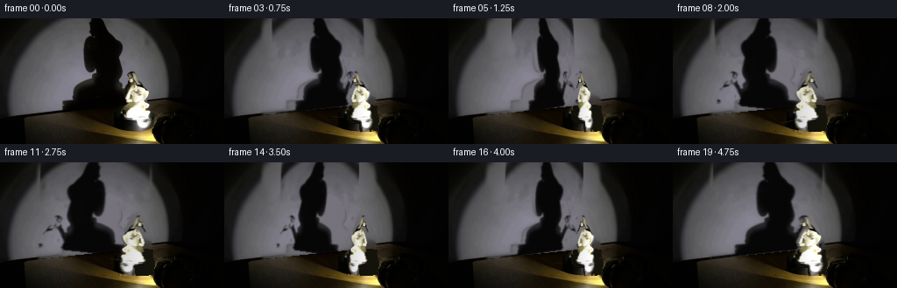
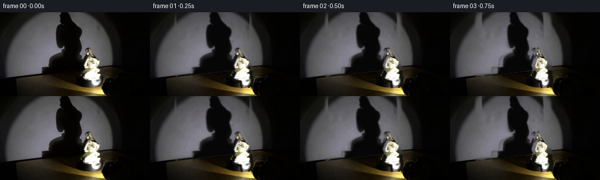
展开代码变化
--- 上一保存版本
+++ 本次保存版本
@@ -0,0 +1,197 @@
+from pathlib import Path
+import cv2
+import numpy as np
+from PIL import Image
+import artifact_io
+
+# Analytic image animation of the photographed turntable demonstration.
+ROOT = Path(__file__).resolve().parent
+src = np.asarray(Image.open(ROOT / "first_frame.png").convert("RGB"), dtype=np.uint8)
+H, W = src.shape[:2]
+ygrid, xgrid = np.mgrid[:H, :W]
+gray = src.astype(np.float32).mean(axis=2)
+
+# The wall/table junction is a slightly rising line. Everything above it is wall.
+wall_bottom = 115.0 - 0.105 * xgrid
+wall = ygrid < wall_bottom
+
+# Recover the unobstructed circular light pool from its visible sectors. Radial
+# medians retain the color and falloff of the real lamp better than a synthetic spot.
+cx, cy = 107.0, 58.0
+rad = np.sqrt((xgrid-cx)**2 + (ygrid-cy)**2)
+sample = wall & (((xgrid < 69) & (xgrid > 8)) | ((xgrid > 174) & (xgrid < 214)))
+light_plate = np.empty_like(src, dtype=np.float32)
+for channel in range(3):
+ profile = np.full(170, np.nan, np.float32)
+ for rr in range(170):
+ take = sample & (rad >= rr-1.7) & (rad < rr+1.7)
+ if np.any(take):
+ profile[rr] = np.median(src[..., channel][take])
+ good = np.flatnonzero(np.isfinite(profile))
+ profile = np.interp(np.arange(170), good, profile[good]).astype(np.float32)
+ profile = cv2.GaussianBlur(profile[:, None], (1, 13), 0).ravel()
+ light_plate[..., channel] = profile[np.clip(rad.astype(np.int32), 0, 169)]
+# Very restrained wall grain prevents a conspicuously smooth repaired patch.
+rng = np.random.default_rng(8201)
+noise = rng.normal(0, 1, (H, W)).astype(np.float32)
+noise = .55*noise + .7*cv2.GaussianBlur(noise, (0, 0), 1.1)
+light_plate += noise[..., None] * np.array([.75, .72, .64], np.float32)
+light_plate = np.clip(light_plate, 0, 255)
+plate_gray = light_plate.mean(axis=2)
+
+# Extract the photographed cast shadow as an optical-density matte. We animate
+# this real silhouette rather than drawing a cartoon shadow.
+ratio = gray / np.maximum(plate_gray, 8.0)
+shadow_a = np.clip((1.0-ratio) / .93, 0, 1)
+shadow_region = wall & (xgrid > 43) & (xgrid < 172) & (ygrid < 114)
+shadow_a *= shadow_region
+shadow_a[shadow_a < .075] = 0
+shadow_a = cv2.GaussianBlur(shadow_a.astype(np.float32), (0, 0), .65)
+shadow_a = np.clip(shadow_a, 0, 1)
+
+# A clean locked-off background: replace only the old shadow by the recovered wall.
+repair = cv2.GaussianBlur((shadow_a > .035).astype(np.float32), (0, 0), 2.0)
+repair *= wall.astype(np.float32)
+clean = src.astype(np.float32)*(1-repair[..., None]) + light_plate*repair[..., None]
+
+# Segment the porcelain figure. The conservative polygon keeps the turntable and
+# the torch outside the sprite while retaining the dark hair and contour.
+poly = np.array([[151,56],[159,59],[162,68],[166,75],[171,79],[170,89],
+ [175,97],[169,106],[175,114],[172,128],[143,129],[139,120],
+ [142,111],[137,101],[140,91],[141,78],[145,68]], np.int32)
+gcmask = np.full((H, W), cv2.GC_BGD, np.uint8)
+cv2.fillPoly(gcmask, [poly], cv2.GC_PR_FGD)
+inside = np.zeros((H, W), np.uint8)
+cv2.fillPoly(inside, [poly], 1)
+gcmask[(gray > 112) & (inside > 0)] = cv2.GC_FGD
+bgm = np.zeros((1,65), np.float64); fgm = np.zeros((1,65), np.float64)
+cv2.grabCut(cv2.cvtColor(src, cv2.COLOR_RGB2BGR), gcmask, None, bgm, fgm, 8,
+ cv2.GC_INIT_WITH_MASK)
+figmask = ((gcmask == cv2.GC_FGD) | (gcmask == cv2.GC_PR_FGD)).astype(np.uint8)
+figmask = cv2.morphologyEx(figmask, cv2.MORPH_CLOSE, np.ones((3,3), np.uint8))
+figmask = cv2.morphologyEx(figmask, cv2.MORPH_OPEN, np.ones((2,2), np.uint8))
+fig_a = cv2.GaussianBlur(figmask.astype(np.float32), (0,0), .60)
+fig_a = np.clip(fig_a, 0, 1)
+
+# Remove the original figure from the clean plate. Wall pixels come from the light
+# reconstruction. On the platform, a subdued radial top surface is reconstructed.
+remove = cv2.dilate((fig_a > .03).astype(np.uint8), np.ones((5,5), np.uint8))
+inpainted = cv2.inpaint(np.clip(clean,0,255).astype(np.uint8), remove, 5,
+ cv2.INPAINT_TELEA).astype(np.float32)
+clean = clean*(1-remove[...,None]) + inpainted*remove[...,None]
+# Reconstruct dark platform only inside the removed footprint below the wall edge.
+xx = (xgrid-158.0)/45.0; yy = (ygrid-114.0)/15.5
+platform = xx*xx + yy*yy < 1.0
+pf = np.zeros_like(clean)
+edgeglow = np.clip((xgrid-120)/90, 0, 1)
+pf[...,0] = 12 + 15*edgeglow
+pf[...,1] = 12 + 13*edgeglow
+pf[...,2] = 8 + 6*edgeglow
+pfill = (remove > 0) & platform & (~wall)
+clean[pfill] = pf[pfill]
+
+# Sprite crop, retained from the actual first frame.
+x0,y0,x1,y1 = 134,54,178,131
+sprite_rgb = src[y0:y1, x0:x1].copy()
+sprite_a = fig_a[y0:y1, x0:x1].copy()
+
+# Original shadow crop. Its changing width and handedness follow the same phase as
+# the porcelain figure, so the wall projection remains causally coherent.
+sx0,sy0,sx1,sy1 = 40,0,176,115
+sh_sprite = shadow_a[sy0:sy1, sx0:sx1].copy()
+
+def row_shift(im, amplitude, interpolation):
+ """Small depth-dependent displacement, suggestive of perspective around an axis."""
+ hh, ww = im.shape[:2]
+ yy, xx = np.mgrid[:hh,:ww].astype(np.float32)
+ rel = yy/max(hh-1,1) - .58
+ mapx = (xx - amplitude*rel).astype(np.float32)
+ return cv2.remap(im, mapx, yy, interpolation, borderMode=cv2.BORDER_CONSTANT,
+ borderValue=0)
+
+def make_figure(theta):
+ c, s = np.cos(theta), np.sin(theta)
+ width_scale = .56 + .44*abs(c)
+ # Crossing the narrow profile naturally hides the switch to the reverse face.
+ rgba = sprite_rgb[:, ::-1].copy() if c < 0 else sprite_rgb.copy()
+ aa = sprite_a[:, ::-1].copy() if c < 0 else sprite_a.copy()
+ nw = max(10, int(round(rgba.shape[1]*width_scale)))
+ rgba = cv2.resize(rgba, (nw, rgba.shape[0]), interpolation=cv2.INTER_LANCZOS4)
+ aa = cv2.resize(aa, (nw, aa.shape[0]), interpolation=cv2.INTER_LINEAR)
+ rgba = row_shift(rgba, 3.0*s, cv2.INTER_LINEAR)
+ aa = row_shift(aa, 3.0*s, cv2.INTER_LINEAR)
+ # The far/back view has less frontal glare; the fixed right-hand light remains.
+ back = (1-c)*.5
+ soft = cv2.GaussianBlur(rgba, (3,3), .45)
+ rgba = rgba.astype(np.float32)*(1-.16*back) + soft.astype(np.float32)*(.05*back)
+ horiz = np.linspace(.91, 1.08, nw, dtype=np.float32)[None,:,None]
+ rgba *= horiz
+ return np.clip(rgba,0,255), np.clip(aa,0,1)
+
+def make_shadow(theta):
+ c, s = np.cos(theta), np.sin(theta)
+ width_scale = .56 + .44*abs(c)
+ sh = sh_sprite[:, ::-1] if c < 0 else sh_sprite
+ nw = max(20, int(round(sh.shape[1]*width_scale)))
+ sh = cv2.resize(sh, (nw, sh.shape[0]), interpolation=cv2.INTER_LINEAR)
+ sh = row_shift(sh, 7.0*s, cv2.INTER_LINEAR)
+ return np.clip(sh,0,1)
+
+def platform_marks(canvas, theta):
+ """Minute surface marks make the black circular platform's clockwise turn legible."""
+ overlay = canvas.copy()
+ # Clockwise in image coordinates: angle increases because y points downward.
+ for phase, strength in [(0.25, .34), (2.55, .22), (4.35, .18)]:
+ a = phase + theta
+ r0, r1 = 24, 38
+ p0 = (int(round(158+r0*np.cos(a))), int(round(115+6.3*np.sin(a))))
+ p1 = (int(round(158+r1*np.cos(a))), int(round(115+9.6*np.sin(a))))
+ col = (45, 42, 25) if np.sin(a) < .55 else (30,29,18)
+ cv2.line(overlay, p0, p1, col, 1, cv2.LINE_AA)
+ canvas[:] = canvas*(1-strength) + overlay*strength
+ return canvas
+
+frames = []
+for i in range(20):
+ if i == 0:
+ frames.append(src.copy())
+ continue
+ # One smooth clockwise revolution during the five-second observation.
+ theta = 2*np.pi*i/20.0
+ fr = clean.copy()
+
+ # Animated large shadow on the wall; its bottom remains anchored at the wall/table line.
+ sh = make_shadow(theta)
+ hh, ww = sh.shape
+ center_x = 108.0 + 1.6*np.sin(theta)
+ dx = int(round(center_x - ww/2))
+ dy = 0
+ fullsh = np.zeros((H,W), np.float32)
+ xa, xb = max(0,dx), min(W,dx+ww); ya, yb = max(0,dy), min(H,dy+hh)
+ if xa < xb and ya < yb:
+ fullsh[ya:yb,xa:xb] = sh[ya-dy:yb-dy,xa-dx:xb-dx]
+ fullsh *= wall.astype(np.float32)
+ fullsh = cv2.GaussianBlur(fullsh, (0,0), .42)
+ # Neutral near-black optical attenuation, preserving a little lit-wall color.
+ fr *= (1 - .94*fullsh[...,None])
+
+ fr = platform_marks(fr, theta)
+
+ # Figure rotates about a nearly centered pin on the platform.
+ rgb, aa = make_figure(theta)
+ hh, ww = aa.shape
+ center_x = 156.0 + 1.35*(np.cos(theta)-1.0)
+ dx = int(round(center_x - ww/2))
+ dy = y0
+ xa, xb = max(0,dx), min(W,dx+ww); ya, yb = max(0,dy), min(H,dy+hh)
+ if xa < xb and ya < yb:
+ a = aa[ya-dy:yb-dy,xa-dx:xb-dx,None]
+ tile = rgb[ya-dy:yb-dy,xa-dx:xb-dx]
+ fr[ya:yb,xa:xb] = fr[ya:yb,xa:xb]*(1-a) + tile*a
+
+ frames.append(np.clip(fr,0,255).astype(np.uint8))
+
+frames = np.stack(frames, axis=0)
+assert frames.shape == (20,144,256,3) and frames.dtype == np.uint8
+assert np.array_equal(frames[0], src)
+artifact_io.save(frames, ROOT)
候选 02播放与检查图
点击播放 · 原生 RGB 像素
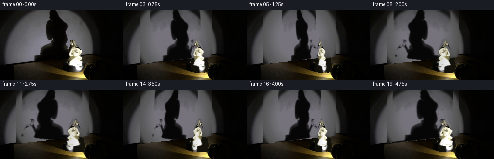
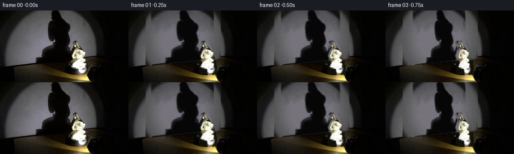
展开代码变化
--- 上一保存版本
+++ 本次保存版本
@@ -53,6 +53,10 @@
repair = cv2.GaussianBlur((shadow_a > .035).astype(np.float32), (0, 0), 2.0)
repair *= wall.astype(np.float32)
clean = src.astype(np.float32)*(1-repair[..., None]) + light_plate*repair[..., None]
+# Across the occupied part of the wall, use the fully recovered lamp plate. This
+# avoids leaving telltale contour remnants when the large silhouette moves away.
+wall_rebuild = wall & (xgrid > 33) & (xgrid < 184)
+clean[wall_rebuild] = light_plate[wall_rebuild]
# Segment the porcelain figure. The conservative polygon keeps the turntable and
# the torch outside the sprite while retaining the dark hair and contour.
@@ -76,6 +80,11 @@
# Remove the original figure from the clean plate. Wall pixels come from the light
# reconstruction. On the platform, a subdued radial top surface is reconstructed.
remove = cv2.dilate((fig_a > .03).astype(np.uint8), np.ones((5,5), np.uint8))
+# Include the conservative complete footprint: dark hair and edge pixels are easy
+# for color segmentation to miss, but must not remain behind a side-on figure.
+footprint = np.zeros((H,W), np.uint8)
+cv2.fillPoly(footprint, [poly], 1)
+remove = np.maximum(remove, footprint)
inpainted = cv2.inpaint(np.clip(clean,0,255).astype(np.uint8), remove, 5,
cv2.INPAINT_TELEA).astype(np.float32)
clean = clean*(1-remove[...,None]) + inpainted*remove[...,None]
候选 03播放与检查图
点击播放 · 原生 RGB 像素

展开代码变化
--- 上一保存版本
+++ 本次保存版本
@@ -55,8 +55,10 @@
clean = src.astype(np.float32)*(1-repair[..., None]) + light_plate*repair[..., None]
# Across the occupied part of the wall, use the fully recovered lamp plate. This
# avoids leaving telltale contour remnants when the large silhouette moves away.
-wall_rebuild = wall & (xgrid > 33) & (xgrid < 184)
-clean[wall_rebuild] = light_plate[wall_rebuild]
+wall_rebuild = (wall & (xgrid > 26) & (xgrid < 191)).astype(np.float32)
+wall_rebuild = cv2.GaussianBlur(wall_rebuild, (0,0), 7.0)
+wall_rebuild *= wall.astype(np.float32)
+clean = clean*(1-wall_rebuild[...,None]) + light_plate*wall_rebuild[...,None]
# Segment the porcelain figure. The conservative polygon keeps the turntable and
# the torch outside the sprite while retaining the dark hair and contour.
@@ -144,7 +146,17 @@
nw = max(20, int(round(sh.shape[1]*width_scale)))
sh = cv2.resize(sh, (nw, sh.shape[0]), interpolation=cv2.INTER_LINEAR)
sh = row_shift(sh, 7.0*s, cv2.INTER_LINEAR)
- return np.clip(sh,0,1)
+ # Compression can split one-pixel neck/arm bridges. A photographic shadow is
+ # optically almost opaque here, so repair those bridges and retain only the
+ # principal connected silhouette before restoring its soft penumbra.
+ solid = (sh > .13).astype(np.uint8)
+ solid = cv2.morphologyEx(solid, cv2.MORPH_CLOSE, np.ones((5,5),np.uint8))
+ count, labels, stats, _ = cv2.connectedComponentsWithStats(solid, 8)
+ if count > 1:
+ largest = 1 + np.argmax(stats[1:, cv2.CC_STAT_AREA])
+ solid = (labels == largest).astype(np.float32)
+ solid = cv2.GaussianBlur(solid.astype(np.float32), (0,0), 1.05)
+ return np.clip(solid,0,1)
def platform_marks(canvas, theta):
"""Minute surface marks make the black circular platform's clockwise turn legible."""
候选 04播放与检查图
点击播放 · 原生 RGB 像素

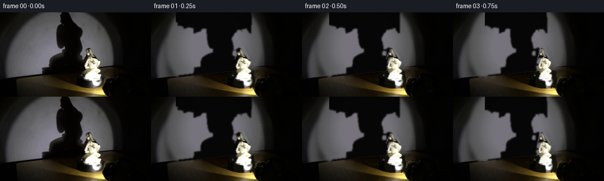
展开代码变化
--- 上一保存版本 +++ 本次保存版本 @@ -43,7 +43,9 @@ # this real silhouette rather than drawing a cartoon shadow. ratio = gray / np.maximum(plate_gray, 8.0) shadow_a = np.clip((1.0-ratio) / .93, 0, 1) -shadow_region = wall & (xgrid > 43) & (xgrid < 172) & (ygrid < 114) +# Stay inside the light pool: its naturally dark exterior is not part of the cast +# silhouette (and would otherwise become a false black canopy when transformed). +shadow_region = wall & (xgrid > 43) & (xgrid < 172) & (ygrid < 114) & (rad < 83) shadow_a *= shadow_region shadow_a[shadow_a < .075] = 0 shadow_a = cv2.GaussianBlur(shadow_a.astype(np.float32), (0, 0), .65)

候选 06播放与检查图
点击播放 · 原生 RGB 像素

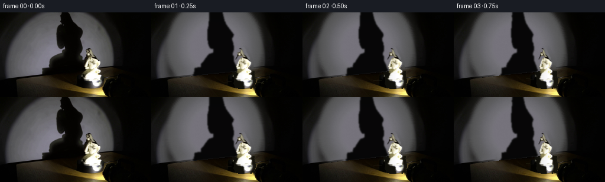
展开代码变化
--- 上一保存版本 +++ 本次保存版本 @@ -45,7 +45,11 @@ shadow_a = np.clip((1.0-ratio) / .93, 0, 1) # Stay inside the light pool: its naturally dark exterior is not part of the cast # silhouette (and would otherwise become a false black canopy when transformed). -shadow_region = wall & (xgrid > 43) & (xgrid < 172) & (ygrid < 114) & (rad < 83) +shadow_bounds = np.zeros((H,W), np.uint8) +cv2.fillPoly(shadow_bounds, [np.array([[99,0],[121,0],[126,20],[139,37], + [143,62],[137,80],[146,99],[139,114],[67,114],[72,94],[86,85], + [96,72],[94,51],[96,29]], np.int32)], 1) +shadow_region = wall & (shadow_bounds > 0) & (ygrid < 114) shadow_a *= shadow_region shadow_a[shadow_a < .075] = 0 shadow_a = cv2.GaussianBlur(shadow_a.astype(np.float32), (0, 0), .65)
候选 07播放与检查图
点击播放 · 原生 RGB 像素

展开代码变化
--- 上一保存版本
+++ 本次保存版本
@@ -159,8 +159,11 @@
solid = cv2.morphologyEx(solid, cv2.MORPH_CLOSE, np.ones((5,5),np.uint8))
count, labels, stats, _ = cv2.connectedComponentsWithStats(solid, 8)
if count > 1:
- largest = 1 + np.argmax(stats[1:, cv2.CC_STAT_AREA])
- solid = (labels == largest).astype(np.float32)
+ # Keep secondary hand/arm pieces as well as the main body, while rejecting
+ # isolated sensor specks.
+ keep = np.zeros(count, np.uint8)
+ keep[1:] = (stats[1:, cv2.CC_STAT_AREA] >= 9)
+ solid = keep[labels].astype(np.float32)
solid = cv2.GaussianBlur(solid.astype(np.float32), (0,0), 1.05)
return np.clip(solid,0,1)
可观测工具轨迹
实际执行的命令与返回图片。
命令 1exit 0
/bin/bash -lc 'cat GENERATION_RULES.md'
命令 2exit 0
/bin/bash -lc "cat prompt.txt && printf '\\n---FILES---\\n' && find . -maxdepth 2 -type f -printf '%p\\n' | sort"
命令 3exit 0
/bin/bash -lc "python3 - <<'PY'
from PIL import Image
im=Image.open('first_frame.png')
print(im.size, im.mode)
PY"命令 4exit 0
/bin/bash -lc "sed -n '1,240p' artifact_io.py"
命令 5exit 0
/bin/bash -lc "python3 - <<'PY' import importlib.util for x in ['cv2','numpy','PIL','imageio','scipy']: print(x, bool(importlib.util.find_spec(x))) PY"
命令 6exit 0
/bin/bash -lc "python3 - <<'PY'
from PIL import Image
im=Image.open('first_frame.png')
# crop upscale
im.crop((60,0,230,144)).resize((680,576)).save('.tmp/crop.png')
PY"命令 7exit 0
/bin/bash -lc "cat > .tmp/explore.py <<'PY'
import cv2, numpy as np
from PIL import Image
im=cv2.imread('first_frame.png')[:,:,::-1]
h,w=im.shape[:2]
y,x=np.mgrid[:h,:w]
g=im.mean(2)
# estimate radial profiles for several possible centers using valid wall region; pick fixed
cx,cy=107,62
r=np.sqrt((x-cx)**2+(y-cy)**2)
valid=(y<104)&(((x<74)&(x>10))|((x>168)&(x<211)))
# exclude near black and statue
for ch in range(3):
vals=[]
for k in range(150):
m=valid&(r>=k)&(r<k+3)
vals.append(np.median(im[:,:,ch][m]) if m.any() else np.nan)
vals=np.array(vals)
ok=np.isfinite(vals)
vals=np.interp(np.arange(150),np.where(ok)[0],vals[ok])
vals=cv2.GaussianBlur(vals[:,None].astype(np.float32),(1,21),0).ravel()
if ch==0: bg=np.zeros_like(im,dtype=np.float32)
bg[:,:,ch]=vals[np.clip(r.astype(int),0,149)]
# light texture from source high freq tiny
bg=np.clip(bg,0,255).astype(np.uint8)
deficit=bg.mean(2)-g
sh=(deficit>22)&(x>55)&(x<164)&(y<116)
# morphological
sh=cv2.morphologyEx(sh.astype(np.uint8),cv2.MORPH_CLOSE,np.ones((5,5),np.uint8))
cv2.imwrite('.tmp/bg.png',bg[:,:,::-1])
cv2.imwrite('.tmp/def.png',np.clip(deficit*3,0,255).astype(np.uint8))
cv2.imwrite('.tmp/sh.png',sh*255)
# grabcut
mask=np.zeros((h,w),np.uint8)
mask[:]=cv2.GC_BGD
# polygon probable foreground
poly=np.array([[151,56],[160,59],[164,71],[170,77],[169,88],[175,97],[169,108],[174,115],[172,127],[141,127],[137,116],[141,108],[136,99],[141,88],[142,75]])
cv2.fillPoly(mask,[poly],cv2.GC_PR_FGD)
# definite bright fg within poly
bright=(g>135)
mask[(bright)&(cv2.fillPoly(np.zeros((h,w),np.uint8),[poly],1)>0)]=cv2.GC_FGD
# obvious boundary background polygon outside
bgmodel=np.zeros((1,65),np.float64); fgmodel=np.zeros((1,65),np.float64)
cv2.grabCut(im[:,:,::-1],mask,None,bgmodel,fgmodel,8,cv2.GC_INIT_WITH_MASK)
fg=((mask==1)|(mask==3)).astype(np.uint8)
fg=cv2.morphologyEx(fg,cv2.MORPH_CLOSE,np.ones((3,3),np.uint8))
cv2.imwrite('.tmp/fg.png',fg*255)
out=im.copy(); out[fg==0]=0
cv2.imwrite('.tmp/stat.png',out[:,:,::-1])
PY
python3 .tmp/explore.py"命令 8exit 1
/bin/bash -lc "cat > generate.py <<'PY'
from pathlib import Path
import cv2
import numpy as np
from PIL import Image
import artifact_io
# Analytic image animation of the photographed turntable demonstration.
ROOT = Path(__file__).resolve().parent
src = np.asarray(Image.open(ROOT / \"first_frame.png\").convert(\"RGB\"), dtype=np.uint8)
H, W = src.shape[:2]
ygrid, xgrid = np.mgrid[:H, :W]
gray = src.astype(np.float32).mean(axis=2)
# The wall/table junction is a slightly rising line. Everything above it is wall.
wall_bottom = 115.0 - 0.105 * xgrid
wall = ygrid < wall_bottom
# Recover the unobstructed circular light pool from its visible sectors. Radial
# medians retain the color and falloff of the real lamp better than a synthetic spot.
cx, cy = 107.0, 58.0
rad = np.sqrt((xgrid-cx)**2 + (ygrid-cy)**2)
sample = wall & (((xgrid < 69) & (xgrid > 8)) | ((xgrid > 174) & (xgrid < 214)))
light_plate = np.empty_like(src, dtype=np.float32)
for channel in range(3):
profile = np.full(170, np.nan, np.float32)
for rr in range(170):
take = sample & (rad >= rr-1.7) & (rad < rr+1.7)
if np.any(take):
profile[rr] = np.median(src[..., channel][take])
good = np.flatnonzero(np.isfinite(profile))
profile = np.interp(np.arange(170), good, profile[good]).astype(np.float32)
profile = cv2.GaussianBlur(profile[:, None], (1, 13), 0).ravel()
light_plate[..., channel] = profile[np.clip(rad.astype(np.int32), 0, 169)]
# Very restrained wall grain prevents a conspicuously smooth repaired patch.
rng = np.random.default_rng(8201)
noise = rng.normal(0, 1, (H, W)).astype(np.float32)
noise = .55*noise + .7*cv2.GaussianBlur(noise, (0, 0), 1.1)
light_plate += noise[..., None] * np.array([.75, .72, .64], np.float32)
light_plate = np.clip(light_plate, 0, 255)
plate_gray = light_plate.mean(axis=2)
# Extract the photographed cast shadow as an optical-density matte. We animate
# this real silhouette rather than drawing a cartoon shadow.
ratio = gray / np.maximum(plate_gray, 8.0)
shadow_a = np.clip((1.0-ratio) / .93, 0, 1)
shadow_region = wall & (xgrid > 43) & (xgrid < 172) & (ygrid < 114)
shadow_a *= shadow_region
shadow_a[shadow_a < .075] = 0
shadow_a = cv2.GaussianBlur(shadow_a.astype(np.float32), (0, 0), .65)
shadow_a = np.clip(shadow_a, 0, 1)
# A clean locked-off background: replace only the old shadow by the recovered wall.
repair = cv2.GaussianBlur((shadow_a > .035).astype(np.float32), (0, 0), 2.0)
repair *= wall.astype(np.float32)
clean = src.astype(np.float32)*(1-repair[..., None]) + light_plate*repair[..., None]
# Segment the porcelain figure. The conservative polygon keeps the turntable and
# the torch outside the sprite while retaining the dark hair and contour.
poly = np.array([[151,56],[159,59],[162,68],[166,75],[171,79],[170,89],
[175,97],[169,106],[175,114],[172,128],[143,129],[139,120],
[142,111],[137,101],[140,91],[141,78],[145,68]], np.int32)
gcmask = np.full((H, W), cv2.GC_BGD, np.uint8)
cv2.fillPoly(gcmask, [poly], cv2.GC_PR_FGD)
inside = np.zeros((H, W), np.uint8)
cv2.fillPoly(inside, [poly], 1)
gcmask[(gray > 112) & (inside > 0)] = cv2.GC_FGD
bgm = np.zeros((1,65), np.float64); fgm = np.zeros((1,65), np.float64)
cv2.grabCut(cv2.cvtColor(src, cv2.COLOR_RGB2BGR), gcmask, None, bgm, fgm, 8,
cv2.GC_INIT_WITH_MASK)
figmask = ((gcmask == cv2.GC_FGD) | (gcmask == cv2.GC_PR_FGD)).astype(np.uint8)
figmask = cv2.morphologyEx(figmask, cv2.MORPH_CLOSE, np.ones((3,3), np.uint8))
figmask = cv2.morphologyEx(figmask, cv2.MORPH_OPEN, np.ones((2,2), np.uint8))
fig_a = cv2.GaussianBlur(figmask.astype(np.float32), (0,0), .60)
fig_a = np.clip(fig_a, 0, 1)
# Remove the original figure from the clean plate. Wall pixels come from the light
# reconstruction. On the platform, a subdued radial top surface is reconstructed.
remove = cv2.dilate((fig_a > .03).astype(np.uint8), np.ones((5,5), np.uint8))
inpainted = cv2.inpaint(np.clip(clean,0,255).astype(np.uint8), remove, 5,
cv2.INPAINT_TELEA).astype(np.float32)
clean = clean*(1-remove[...,None]) + inpainted*remove[...,None]
# Reconstruct dark platform only inside the removed footprint below the wall edge.
xx = (xgrid-158.0)/45.0; yy = (ygrid-114.0)/15.5
platform = xx*xx + yy*yy < 1.0
pf = np.zeros_like(clean)
edgeglow = np.clip((xgrid-120)/90, 0, 1)
pf[...,0] = 12 + 15*edgeglow
pf[...,1] = 12 + 13*edgeglow
pf[...,2] = 8 + 6*edgeglow
pfill = (remove > 0) & platform & (~wall)
clean[pfill] = pf[pfill]
# Sprite crop, retained from the actual first frame.
x0,y0,x1,y1 = 134,54,178,131
sprite_rgb = src[y0:y1, x0:x1].copy()
sprite_a = fig_a[y0:y1, x0:x1].copy()
# Original shadow crop. Its changing width and handedness follow the same phase as
# the porcelain figure, so the wall projection remains causally coherent.
sx0,sy0,sx1,sy1 = 40,0,176,115
sh_sprite = shadow_a[sy0:sy1, sx0:sx1].copy()
def row_shift(im, amplitude, interpolation):
\"\"\"Small depth-dependent displacement, suggestive of perspective around an axis.\"\"\"
hh, ww = im.shape[:2]
yy, xx = np.mgrid[:hh,:ww].astype(np.float32)
rel = yy/max(hh-1,1) - .58
mapx = xx - amplitude*rel
return cv2.remap(im, mapx, yy, interpolation, borderMode=cv2.BORDER_CONSTANT,
borderValue=0)
def make_figure(theta):
c, s = np.cos(theta), np.sin(theta)
width_scale = .56 + .44*abs(c)
# Crossing the narrow profile naturally hides the switch to the reverse face.
rgba = sprite_rgb[:, ::-1].copy() if c < 0 else sprite_rgb.copy()
aa = sprite_a[:, ::-1].copy() if c < 0 else sprite_a.copy()
nw = max(10, int(round(rgba.shape[1]*width_scale)))
rgba = cv2.resize(rgba, (nw, rgba.shape[0]), interpolation=cv2.INTER_LANCZOS4)
aa = cv2.resize(aa, (nw, aa.shape[0]), interpolation=cv2.INTER_LINEAR)
rgba = row_shift(rgba, 3.0*s, cv2.INTER_LINEAR)
aa = row_shift(aa, 3.0*s, cv2.INTER_LINEAR)
# The far/back view has less frontal glare; the fixed right-hand light remains.
back = (1-c)*.5
soft = cv2.GaussianBlur(rgba, (3,3), .45)
rgba = rgba.astype(np.float32)*(1-.16*back) + soft.astype(np.float32)*(.05*back)
horiz = np.linspace(.91, 1.08, nw, dtype=np.float32)[None,:,None]
rgba *= horiz
return np.clip(rgba,0,255), np.clip(aa,0,1)
def make_shadow(theta):
c, s = np.cos(theta), np.sin(theta)
width_scale = .56 + .44*abs(c)
sh = sh_sprite[:, ::-1] if c < 0 else sh_sprite
nw = max(20, int(round(sh.shape[1]*width_scale)))
sh = cv2.resize(sh, (nw, sh.shape[0]), interpolation=cv2.INTER_LINEAR)
sh = row_shift(sh, 7.0*s, cv2.INTER_LINEAR)
return np.clip(sh,0,1)
def platform_marks(canvas, theta):
\"\"\"Minute surface marks make the black circular platform's clockwise turn legible.\"\"\"
overlay = canvas.copy()
# Clockwise in image coordinates: angle increases because y points downward.
for phase, strength in [(0.25, .34), (2.55, .22), (4.35, .18)]:
a = phase + theta
r0, r1 = 24, 38
p0 = (int(round(158+r0*np.cos(a))), int(round(115+6.3*np.sin(a))))
p1 = (int(round(158+r1*np.cos(a))), int(round(115+9.6*np.sin(a))))
col = (45, 42, 25) if np.sin(a) < .55 else (30,29,18)
cv2.line(overlay, p0, p1, col, 1, cv2.LINE_AA)
canvas[:] = canvas*(1-strength) + overlay*strength
return canvas
frames = []
for i in range(20):
if i == 0:
frames.append(src.copy())
continue
# One smooth clockwise revolution during the five-second observation.
theta = 2*np.pi*i/20.0
fr = clean.copy()
# Animated large shadow on the wall; its bottom remains anchored at the wall/table line.
sh = make_shadow(theta)
hh, ww = sh.shape
center_x = 108.0 + 1.6*np.sin(theta)
dx = int(round(center_x - ww/2))
dy = 0
fullsh = np.zeros((H,W), np.float32)
xa, xb = max(0,dx), min(W,dx+ww); ya, yb = max(0,dy), min(H,dy+hh)
if xa < xb and ya < yb:
fullsh[ya:yb,xa:xb] = sh[ya-dy:yb-dy,xa-dx:xb-dx]
fullsh *= wall.astype(np.float32)
fullsh = cv2.GaussianBlur(fullsh, (0,0), .42)
# Neutral near-black optical attenuation, preserving a little lit-wall color.
fr *= (1 - .94*fullsh[...,None])
fr = platform_marks(fr, theta)
# Figure rotates about a nearly centered pin on the platform.
rgb, aa = make_figure(theta)
hh, ww = aa.shape
center_x = 156.0 + 1.35*(np.cos(theta)-1.0)
dx = int(round(center_x - ww/2))
dy = y0
xa, xb = max(0,dx), min(W,dx+ww); ya, yb = max(0,dy), min(H,dy+hh)
if xa < xb and ya < yb:
a = aa[ya-dy:yb-dy,xa-dx:xb-dx,None]
tile = rgb[ya-dy:yb-dy,xa-dx:xb-dx]
fr[ya:yb,xa:xb] = fr[ya:yb,xa:xb]*(1-a) + tile*a
frames.append(np.clip(fr,0,255).astype(np.uint8))
frames = np.stack(frames, axis=0)
assert frames.shape == (20,144,256,3) and frames.dtype == np.uint8
assert np.array_equal(frames[0], src)
artifact_io.save(frames, ROOT)
PY
python3 generate.py"命令 9exit 0
/bin/bash -lc "python3 generate.py && python3 - <<'PY'
import numpy as np
from PIL import Image
z=np.load('pixels.npz')['pixels']
print(z.shape,z.dtype)
print('first exact',np.array_equal(np.asarray(Image.open('frames/00.png')),np.asarray(Image.open('first_frame.png'))))
PY"命令 10exit 0
/bin/bash -lc 'python3 generate.py'
命令 11exit 0
/bin/bash -lc "python3 generate.py && python3 - <<'PY'
import numpy as np
from PIL import Image
f=np.stack([np.asarray(Image.open(f'frames/{i:02}.png')) for i in range(20)])
print(f.shape, f.dtype, np.array_equal(f[0],np.asarray(Image.open('first_frame.png'))), 'frame deltas', [round(np.mean(abs(f[i].astype(float)-f[i-1])),2) for i in range(1,5)])
PY"命令 12exit 0
/bin/bash -lc 'python3 generate.py'
命令 13exit 0
/bin/bash -lc 'python3 generate.py'
命令 14exit 0
/bin/bash -lc "python3 generate.py && ls -lh pixels.npz index.html inspection.png generate.py && python3 - <<'PY'
from PIL import Image
import numpy as np
ims=[np.array(Image.open(f'frames/{i:02d}.png')) for i in range(20)]
print('valid', len(ims), ims[0].shape, ims[0].dtype, np.array_equal(ims[0],np.array(Image.open('first_frame.png'))))
PY"视觉工具实际返回图片 1
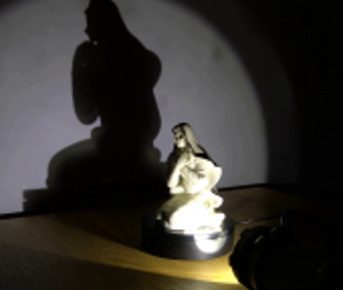
视觉工具实际返回图片 2
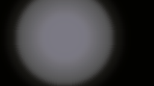
视觉工具实际返回图片 3
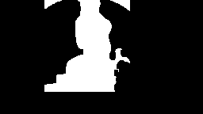
视觉工具实际返回图片 4
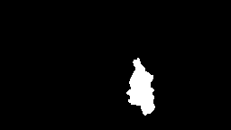
视觉工具实际返回图片 5

视觉工具实际返回图片 6

视觉工具实际返回图片 7
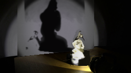
视觉工具实际返回图片 8
视觉工具实际返回图片 9
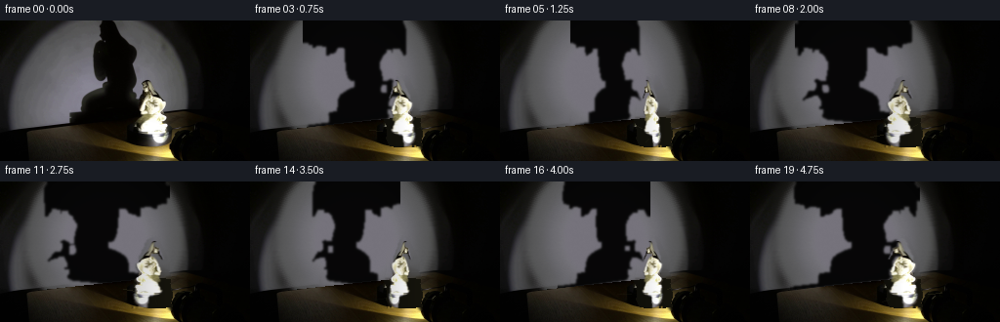
视觉工具实际返回图片 10
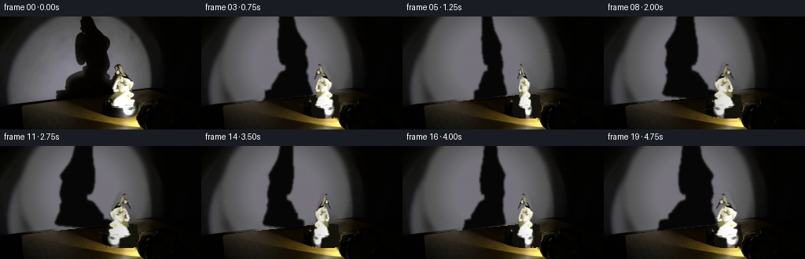
保存候选 7 份；完成命令 14 次；可验证图片返回 10 张。原始 API 响应与完整日志保留在本地。